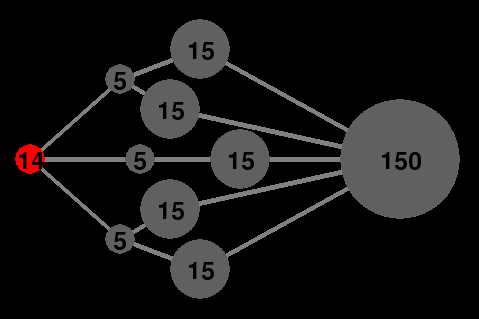

Story
Virus is a mobile game for Android devices. You play as a sentient virus, seeking to self-replicate and pass packets of itself to other computers, ultimately taking over the network.
Instructions
Overview
The network is visualized as a series of circular nodes connected by straight lines. Red nodes are “infected” -- these are computers that you control. Gray nodes are computers yet to be conquered. Each node has a number, printed in the center of its circle. As you send packets from one of your infected nodes to an uninfected node on the network, the uninfected node’s number decreases with each packet you send. Once the uninfected node’s number reaches zero, you have taken over the computer, and it will begin to produce packets for you at regular intervals.
To play
Click on a node that you control, then click on a gray node that you wish to attack (this node must be connected to the first node by a link -- depicted as a straight line). The first node will now send any packets it receives or produces to attack that node. It will continue to do so unless you tell it to do otherwise (e.g. click on it again and then click on a different linked node). When you have taken over a node, you can direct that node to send packets to other nodes in turn. All infected nodes produce new packets at specific intervals, so make sure you set all nodes to send their packets somewhere (if you don't direct them anywhere they’ll just accumulate in the node). The number in a red, infected node tells you how many packets that node contains at a given time.
Win conditions
To beat a level, infect all the nodes. In later levels, it is sufficient to wipeout the competing virus.
Screenshots

Technical details
Virus was written in Python using Pygame, and ported to the Android platform using the Pygame Subset for Android. However, due to a bug in Pygame Subset For Android, the game can only be played on desktop computers.
Credits
Virus was created for Ming Chow's Game Development course (COMP 50-GD) at Tufts University. It is based on an original concept by Max Goldstein and was implemented by Max Goldstein assisted by Eva Parish.
Download the game
Download as .zip
Download as .tar.gz
View on GitHub